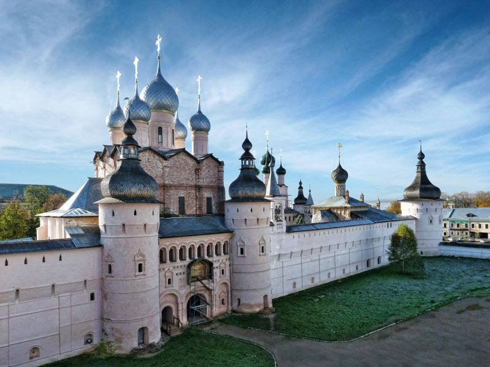

Ростов Великий

Росто́в — город (с 862[4]) в России, районный центр Ярославской области, административный центр Ростовского района. Расположен в 186 км к северо-востоку от Москвы, в 47 км к юго-западу от Ярославля, на берегу озера Неро. Площадь города составляет 32,0 км²[1], население — 30 406[2] человек (2021 год). Один из древнейших городов России, официальное летосчисление ведёт от 862 года[5]. С X века Ростов являлся одним из центров Ростово-Суздальской земли. В XI — начале XIII веков входил во Владимиро-Суздальское княжество. В Ипатьевской летописи при описании событий 1151 года назван Ростовом Великим[6]. В 1207—1474 годах — центр Ростовского княжества. В 1777 году получил статус города. Является городом областного значения[7], при этом в рамках Ростовского муниципального района образует муниципальное образование Ростов со статусом городского поселения как единственный населённый пункт в составе последнего[8].